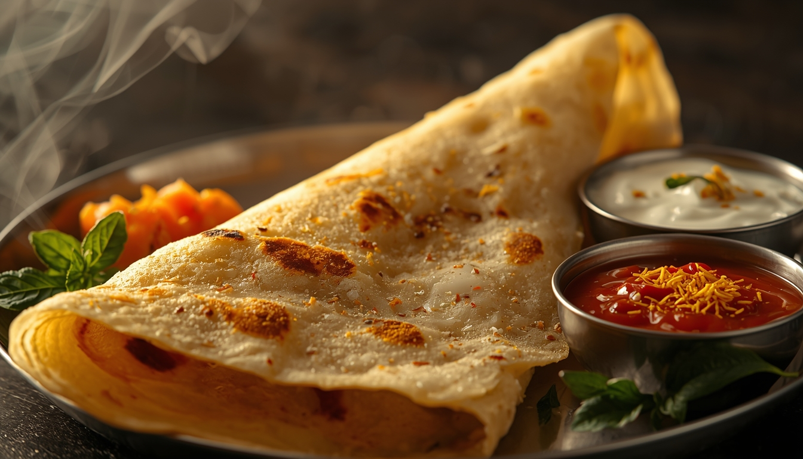

Veg
Crispy Masala Dosa
⏱ Prep time: 60 Minutes
Difficulty: Hard
Ingredients
- 2 cups Dosa Batter (fermented rice/lentil)
- 3 large Potatoes, boiled and mashed
- 1 large Onion, thinly sliced
- 1 tsp Mustard Seeds
- 10-12 fresh Curry Leaves
- 1/2 tsp Turmeric Powder
- 2 Green Chillies, chopped
- Oil or Ghee for roasting
- Salt to taste
Step-by-Step Instructions
- Make the Potato Filling (Aloo Masala): Heat oil in a pan. Add mustard seeds and let them pop. Add curry leaves and green chillies.
- Sauté: Add the sliced onions and sauté until translucent. Stir in the turmeric powder and salt.
- Combine: Add the mashed potatoes to the pan and mix thoroughly until the potatoes turn a vibrant yellow. Remove from heat.
- Prepare the Pan: Heat a flat non-stick or cast-iron pan (tava). Lightly grease it and wipe off excess oil.
- Spread the Batter: Pour a ladle full of dosa batter into the center of the pan. Using the bottom of the ladle, quickly spread it outward in a circular motion to form a thin crepe.
- Roast: Drizzle a little ghee or oil around the edges. Cook on medium-high heat until the bottom turns golden brown and crispy.
- Stuff & Fold: Place a generous spoonful of the potato masala in the center of the dosa. Fold the edges over to cover the filling. Serve hot with coconut chutney and sambar!